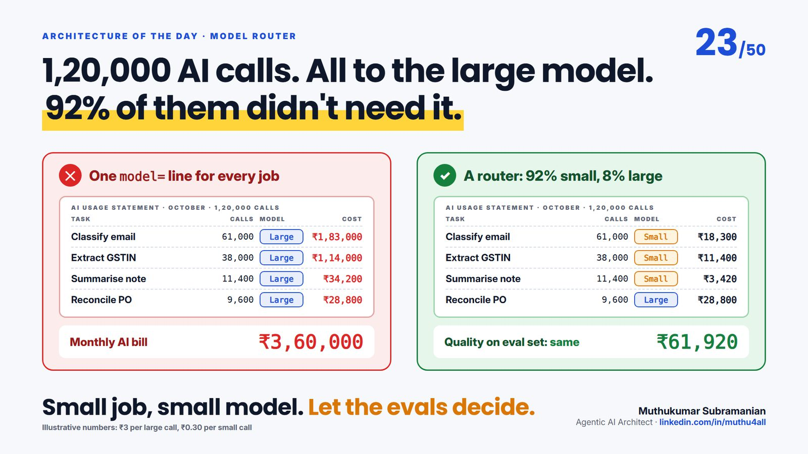
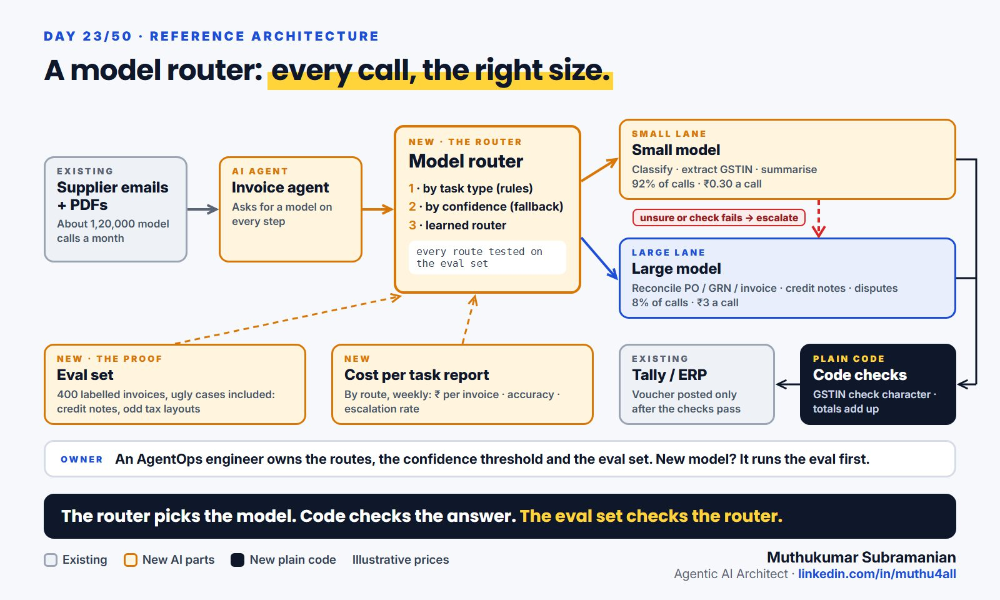
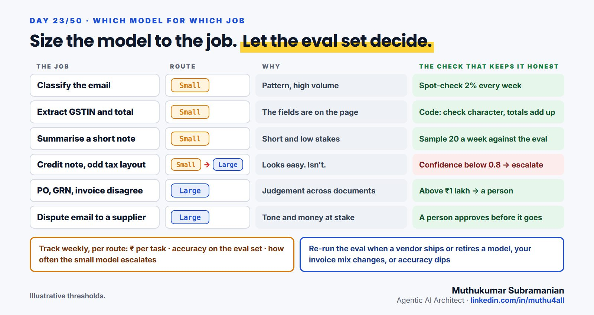

Your AI Agent Used the ₹200 Model for a ₹2 Job.
By Muthukumar Subramanian · Agentic AI Architect

A finance head in Hosur showed me his October AI bill. ₹3.6 lakh. His team was proud of their invoice agent. He wasn't proud of the bill.
I asked him one question: "Which model reads the subject line of an incoming email?"
The same one that does everything else. The most expensive model on the price list, deciding whether an email is an invoice or a lunch invitation. (The company is a composite, and every number in this article is illustrative. The pattern isn't.)
Most AI bills aren't high because AI is expensive. They're high because every job gets the most expensive worker.
On 1 Nov I wrote about the AI bill that tripled while nobody could say what it bought. This is the other half: you can see exactly what it bought, and most of it didn't need buying.
The architecture today
That invoice agent makes about 1,20,000 model calls a month, and most of them are small:
→ Is this email an invoice, a payment reminder or spam?
→ Pull out the GSTIN, the invoice number and the total.
→ Summarise a three-line note from the supplier.
→ Once in a while: work out why the PO, the goods receipt and the invoice disagree, and which is right.
All four go to one model through one API key. One model= line in a config file, set on demo day and never touched again.
On most vendors' own price lists, the largest model costs tens of times more per token than the smallest one in the same family. The ₹200 and ₹2 in the title are a figure of speech. The gap is real.

Where AI plugs in now: a model router
A model router sits between the agent and the models and decides which model gets each call. Three ways to decide, usually adopted in this order:
→ By task type. Plain rules. Classifying and extracting go to the small model. Reconciliation and money judgement go to the large one. An afternoon's work.
→ By confidence. The small model answers first. If it's unsure, or a code check fails (bad GSTIN, totals don't add up), the call goes to the large model. That's the fallback.
→ By a learned router. A model trained on past calls predicts which model will handle this one well. That's what Martian, Not Diamond and the cloud routers sell.
None of this works without an evaluation set: a few hundred real calls with known right answers. Every route runs against it, and you track cost per task and accuracy. If the small route drops below the agreed line, it doesn't ship.
Route by evidence, not by brand.

The reverse failure is just as real
Send a hard case to the small model and it can be confidently wrong. A credit note that looks like an invoice. A supplier who prints IGST where it should be CGST and SGST. The small model posts it, the totals still add up so the code check passes, and you find out at GST return time.
So the router needs two guards: code checks the model can't talk past, and an eval set with the ugly cases in it. A router tuned only on easy invoices saves money right up to the day it costs you.
Where it's heading with agents
In two or three years, I expect routing to be standard in every agent platform, like load balancing in every web stack. AWS already ships Amazon Bedrock Intelligent Prompt Routing, and Microsoft ships a model router in Microsoft Foundry (formerly Azure AI Foundry).
Agents will route inside a single task too: plan with the large model, then hand each step to the cheapest model that passes the eval for it. Budget becomes a routing input: if 80% of the month's AI budget is gone by the 20th, borderline calls move down a size, and someone gets told.
LMSYS's open-source RouteLLM project reported cost cuts of over 85% on one benchmark while keeping 95% of GPT-4's quality. AWS says its router can cut costs by up to 30% without losing accuracy. Those are lab and vendor numbers. Yours depend on your work, which is why you need your own eval.
Watch it work
Calls stream in. One of them is harder than it looks.
👉 [GIF: A-day23-4-in-article-router-lanes.gif]
Caption: Each call takes the small or large lane. A credit note comes back at 41% confidence and bounces up to the large model. All figures illustrative.
Pros
→ The bill drops sharply for high-volume, easy work, and users rarely notice
→ Small models are usually faster, so easy calls come back sooner
→ No lock-in to one model: when a better or cheaper one launches, you change a route, not your agent
Cons
→ One more moving part to run, monitor and debug
→ Escalated calls pay twice. If the small model is unsure too often, routing can cost more than it saves
→ Quality can drift quietly when a vendor updates or retires a model behind one of your routes
The hard part
The eval set. Everyone wants the saving. Nobody wants to label 400 invoices. Without it, routing is guessing.
That's the job of an AgentOps engineer: the person who runs agents in production the way an SRE runs services. The title is still settling. In the Hosur example, call her Nivetha. She owns the routes, the confidence threshold, the eval set and a weekly one-page report: cost per invoice, accuracy and escalation rate, by route. When a new model launches, it runs the eval before anyone changes a line.
And be honest about the saving. On the cover, ₹3.6 lakh drops to about ₹62,000 a month. That holds only for this mix, where most calls are easy. A contract-review agent might save 10%. Measure before you promise.
The opportunity
Every company that put an agent into production this year has a model= line nobody revisited. That's the market.
→ Model routing as a service for Indian SMEs. Connect to the agent they already run, build an eval set from their real invoices, set the routes, and charge a share of the monthly saving.
→ Cost-optimised AI platforms for enterprises. Routing, fallbacks, evals and a cost-per-task view, so the CFO sees what every agent costs per invoice, per ticket, per claim.
→ Eval sets as a product. Labelled GST invoices, e-way bills, customer emails in Tamil and Hinglish. A router is easy to copy. A good eval set for Indian paperwork isn't.
And the people to run it: AgentOps engineers who can read a P&L as well as a trace.
Tools to try
LiteLLM, an open-source proxy with routing and fallbacks · OpenRouter's Auto Router · Martian · Not Diamond · Amazon Bedrock Intelligent Prompt Routing · the Microsoft Foundry model router. If you run the AI gateway from Day 7, start there: the router usually lives beside it.
Your turn 👇
Your agent's easy calls: the smallest model that passes the eval, or the best model just to be safe? Pick one.
Tag the person in your team who set the model= line and never looked at it again.
Day 23 of 50 · follow along. Tomorrow: Day 24 · Your Manager AI Agent Delegated the Job. The ₹38 Lakh Mistake Is Still Yours.